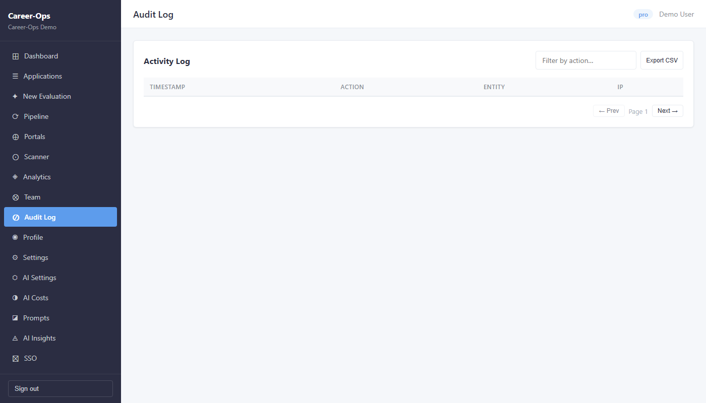
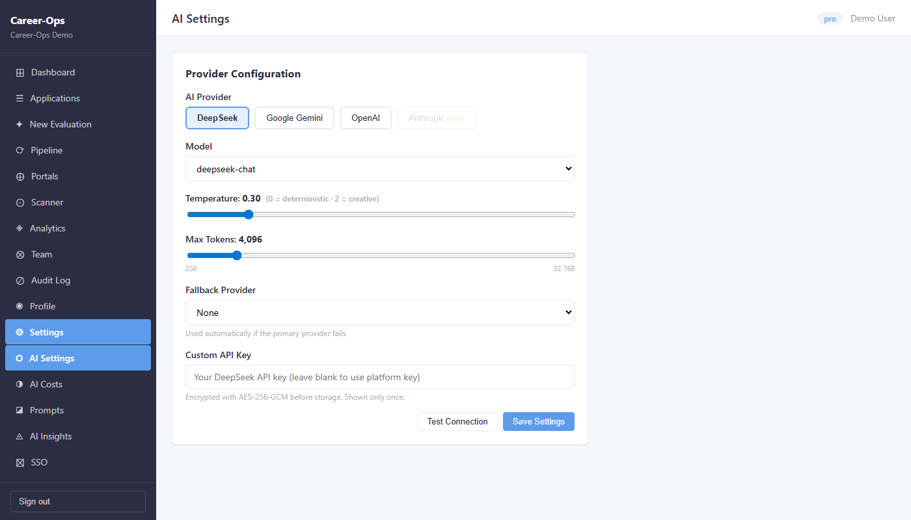
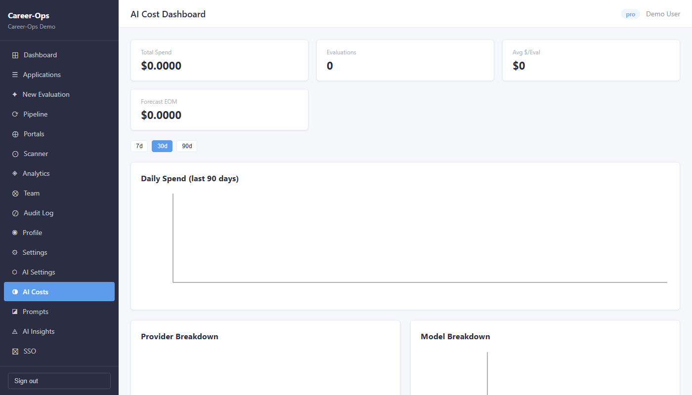
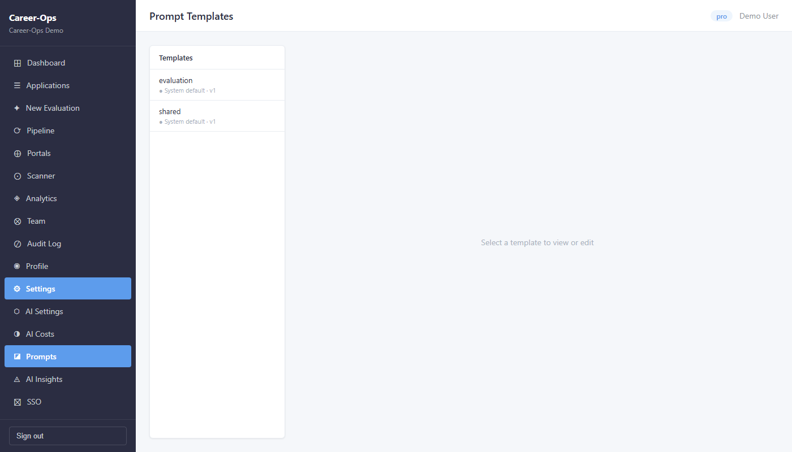
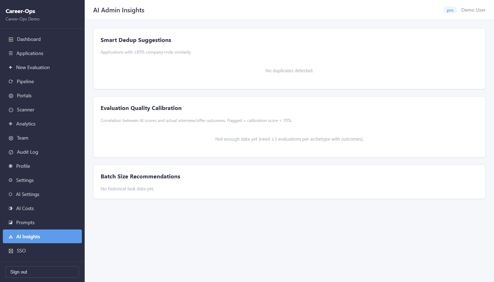
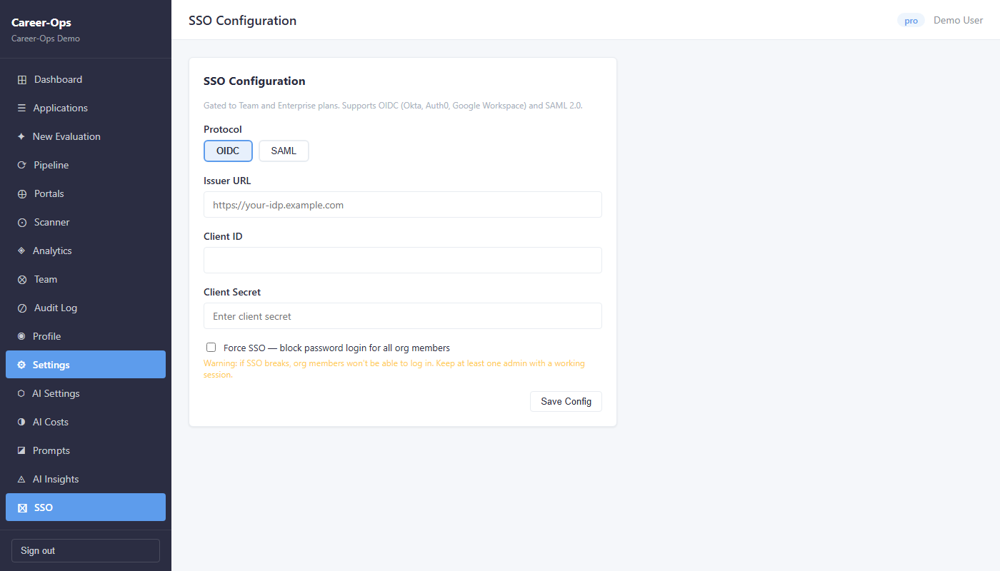
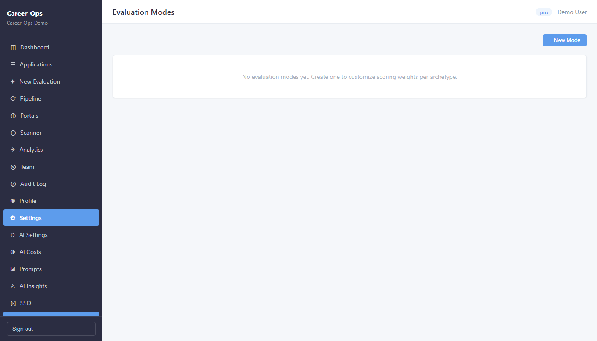
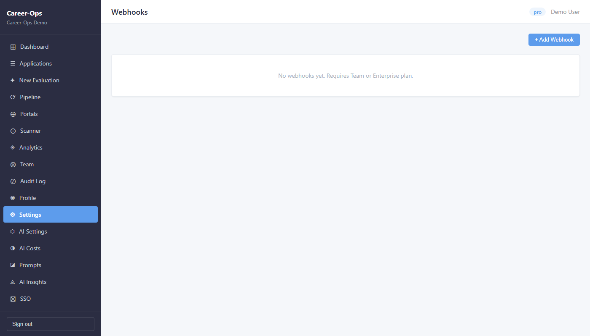
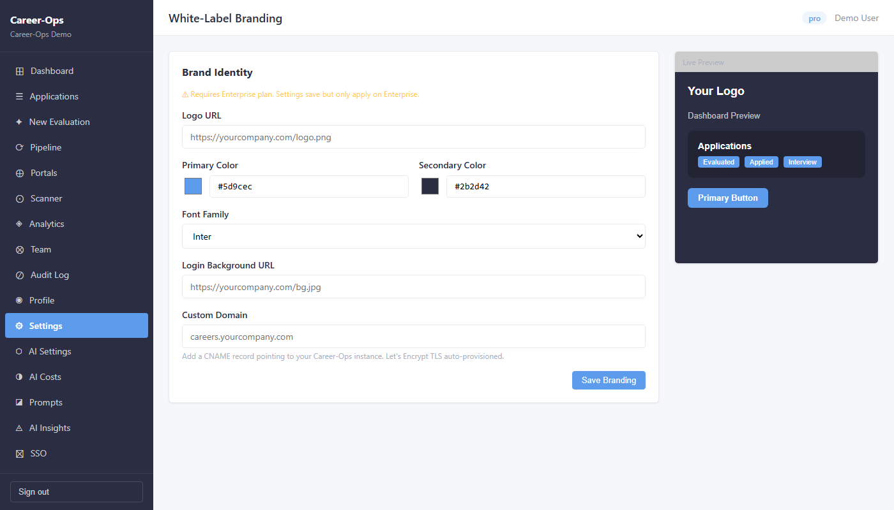
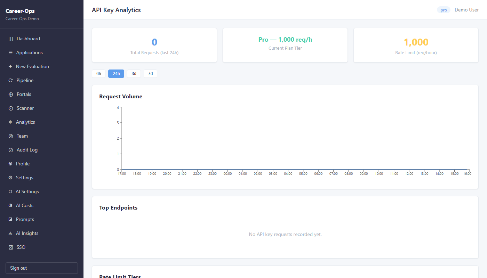

Logging In
Open the app in your browser and enter your credentials. For the demo environment, use:
After login you land on the Dashboard automatically. Your organisation name and plan tier are always visible in the top-right corner.
Dashboard
The Dashboard is your command centre — it shows the health of your job search at a glance.

What you see
- Total Applications — how many jobs you are tracking
- Avg Score — average AI fit score across all evaluations (out of 5.0)
- Pending Evals — jobs in the queue waiting for an AI evaluation
- Conversion Rate — percentage of applications that reached an offer
- Score Distribution chart — bar chart grouping applications by score band (0–2, 2–3, 3–4, 4–5)
- Recent Applications — the last few applications you added
Applications
The master list of every job you are tracking. Each row represents one application and shows its current status in your pipeline.

What you can do
- View all applications with columns for Company, Role, Score, Status, and Date
- Filter by status (Evaluated, Applied, Interview, Offer, Rejected, Discarded)
- Click any row to open the full evaluation report
- Use the + Add Application button to add jobs manually
- Track progress through the hiring funnel in real time
Status meanings
- Evaluated — AI report done, waiting for your decision
- Applied — you have submitted the application
- Interview — actively in an interview process
- Offer — offer received
- Rejected — rejected by the company
- Discarded — you decided not to pursue
- SKIP — poor fit, do not apply
New Evaluation
Submit a job posting for AI analysis. The system reads the job description and scores it against your profile across six dimensions.

How to use it
- Paste the job posting URL — the AI will fetch and read the full description
- Or paste the job description text directly if you do not have a URL
- Click Evaluate to submit — the job goes into the evaluation queue
- You will be redirected to the status page; refresh to see progress
- When complete, the full report appears with a score, gaps, and a tailored CV
Pipeline
A URL inbox for jobs you want to evaluate later. Paste links here during the day; process them in bulk when you are ready.

What you can do
- Add job URLs one by one or paste a list of URLs
- See each URL with its status: pending, processing, done, or error
- Click Process All to evaluate every pending URL in the queue
- Remove URLs you no longer want to evaluate
- Processed URLs automatically move to Applications
Portals
Configure which company job portals the scanner should check. Each portal entry points to a company's Greenhouse, Lever, or Ashby API endpoint.

What you can do
- View all configured portals in a searchable list
- Add new portals manually by entering the company name and ATS URL
- Import a YAML file to bulk-load many portals at once
- Enable or disable individual portals without deleting them
- Set title filters to only pick up roles matching your target keywords
Scanner
Runs automated searches across all your configured portals and surfaces new job postings that match your title filters — without spending any AI tokens.

What you can do
- Click Scan Now to trigger an immediate scan of all active portals
- View newly discovered jobs with company, title, and posting date
- Send any discovered job directly to the Pipeline or straight to Evaluation
- See scan history — when each portal was last checked
- Deduplication is automatic — jobs you have already seen will not appear again
Analytics
Deep-dive charts and pattern analysis on your entire application history. Use this to refine your targeting and understand why you are or are not getting callbacks.

What you see
- Application Funnel — how many applications moved from each stage to the next
- Score vs Outcome — correlation between AI score and actual interview/offer outcomes
- Rejection Patterns — which gaps come up most often in rejected applications
- Top Companies — which companies you have applied to most
- Follow-up Cadence — how long applications typically take to progress
Team
Manage the members of your organisation. Add colleagues, coaches, or recruiters who help you with your job search.

What you can do
- See all current members with their role (Owner, Admin, Member)
- Invite new members by email — they receive a link to join the organisation
- Change a member's role or remove them from the organisation
- Owners can transfer ownership to another admin
Audit Log
A tamper-proof record of every significant action taken in your organisation — who did what and when.

What you see
- Timestamp of every action
- User who performed the action
- Action type (create, update, delete, login, etc.)
- IP address of the request
- Filter by user, action type, or date range
Profile
Your personal information and career configuration. The AI reads this every time it evaluates a job — keeping it accurate directly improves evaluation quality.

Tabs
- Identity — name, email, phone, location, LinkedIn, GitHub, portfolio URLs
- Target Roles — the job titles you are actively targeting (primary and secondary)
- Compensation — your salary expectations (currency, min, max)
- Narrative — your professional headline and superpowers — used in CV generation
- CVs — manage your uploaded CV files used for tailored applications
Settings
Organisation-level configuration — your plan details, usage this month, and API keys for programmatic access.

What you see
- Organisation — name, URL slug, and current plan tier
- Usage This Month — evaluations and scans consumed vs. your monthly allowance
- API Keys — create, name, and revoke API keys for integrations and automation
AI Settings
Choose and configure the AI provider used for job evaluations. You can bring your own API key or use the platform key.

Options
- Provider — choose between DeepSeek, Google Gemini, OpenAI, or Anthropic (Claude)
- Model — select the specific model version for the chosen provider
- Temperature — 0 = deterministic, 2 = creative. Keep at 0.3 for consistent evaluations
- Max Tokens — maximum output length per evaluation (4,096 default is fine)
- Fallback Provider — automatically used if the primary provider fails
- Custom API Key — paste your own key to use your own quota (stored encrypted)
AI Costs
Real-time spend tracking for all AI calls made by your organisation. Use this to monitor costs and forecast your monthly bill.

What you see
- Total Spend — cumulative AI spend in the selected period
- Evaluations — total AI evaluations run
- Avg $/Eval — average cost per evaluation
- Forecast EOM — projected spend by end of month at current rate
- Daily Spend chart — spending trend over the last 7, 30, or 90 days
- Provider Breakdown — spend split by AI provider
- Model Breakdown — spend split by model
- Cost by Organisation — breakdown per tenant (platform-admin view)
Prompt Templates
View and customise the AI prompt templates used for job evaluations. Advanced users can override the default system prompts for their organisation.

What you can do
- Browse all available templates: evaluation and shared system prompt
- Click any template to view its full content
- Create a custom version to override the system default for your organisation
- Templates are versioned — you can revert to an earlier version
- Multi-language templates available (English, German, French, Japanese)
AI Insights
Platform-level intelligence about evaluation quality and opportunities to improve your job-search targeting.

Sections
- Smart Dedup Suggestions — flags applications with ≥85% company+role similarity so you avoid redundant submissions
- Evaluation Quality Calibration — shows correlation between AI scores and real interview/offer outcomes; flags if calibration score drops below 70%
- Batch Size Recommendations — suggests optimal batch sizes based on your historical processing patterns
SSO Configuration
Connect your organisation's identity provider so team members can sign in with their company account.

Supported protocols
- OIDC — works with Okta, Auth0, Google Workspace, Azure AD, and any OpenID-compliant IdP
- SAML 2.0 — for enterprise IdPs that use SAML assertions
Setup steps
- Select your protocol (OIDC or SAML)
- Enter the Issuer URL from your identity provider
- Enter the Client ID and Client Secret from your IdP application
- Optionally enable Force SSO to block password logins for all members
- Click Save Config
Evaluation Modes
Create custom scoring configurations for different job archetypes. For example, you might want to weight "Leadership" more heavily when evaluating VP-level roles.

What you can do
- Click + New Mode to create a custom evaluation configuration
- Name the mode (e.g. "Senior IC", "Engineering Manager")
- Adjust the weight of each scoring block (A–F) for that archetype
- Select a mode when submitting a New Evaluation to apply its weights
- Delete or edit modes at any time
Webhooks
Send real-time notifications to external systems whenever something happens in your Career-Ops account — evaluation completed, application status changed, new job found, etc.

What you can do
- Click + Add Webhook to register an endpoint URL
- Choose which event types to subscribe to (evaluation.completed, application.updated, scan.found, etc.)
- Each delivery includes a JSON payload and an HMAC signature for verification
- View delivery history and retry failed deliveries
- Disable a webhook temporarily without deleting it
Interview Prep
Build and manage your personal library of STAR+R interview stories. Reference these during phone screens and interviews to give structured, memorable answers.

What you can do
- Click + Add Story to create a new STAR story
- Structure each story: Situation, Task, Action, Result, and Reflection
- Tag stories by competency (Leadership, Technical, Collaboration, etc.)
- Filter by tag using the buttons at the top
- Stories are shared with the AI — it can suggest which stories fit a job's requirements
White-Label Branding
Replace Career-Ops branding with your own logo, colours, and domain. Settings save on all plans but only apply visually on Enterprise.

Options
- Logo URL — link to your company logo (PNG or SVG, recommended 200×50px)
- Primary Colour — main brand colour (buttons, highlights)
- Secondary Colour — used for backgrounds and accents
- Font Family — choose from Inter, Roboto, or Lato
- Login Background URL — custom image for the login page
- Custom Domain — serve the app from your own domain (e.g. careers.yourcompany.com) — add a CNAME record pointing to your Career-Ops instance
A live preview of the dashboard with your branding is shown on the right side as you make changes.
API Key Analytics
Monitor usage and rate-limit status for all API keys attached to your organisation. Useful if you are building integrations on top of Career-Ops.

What you see
- Total Requests (last 24h) — number of API calls made across all keys
- Current Plan Tier — your plan and its hourly rate limit
- Rate Limit (req/hour) — maximum requests per hour for your plan
- Request Volume chart — API traffic over the selected time window (8h, 24h, 3d, 7d)
- Top Endpoints — which API routes are called most frequently
- Rate Limit Tiers table — comparison of limits across Free, Pro, Team, and Enterprise plans
Plan rate limits
- Free — 100 req/h
- Pro — 1,000 req/h
- Team — 10,000 req/h
- Enterprise — 100,000 req/h